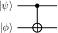
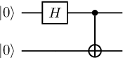
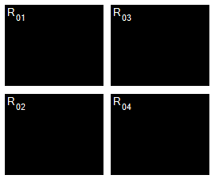
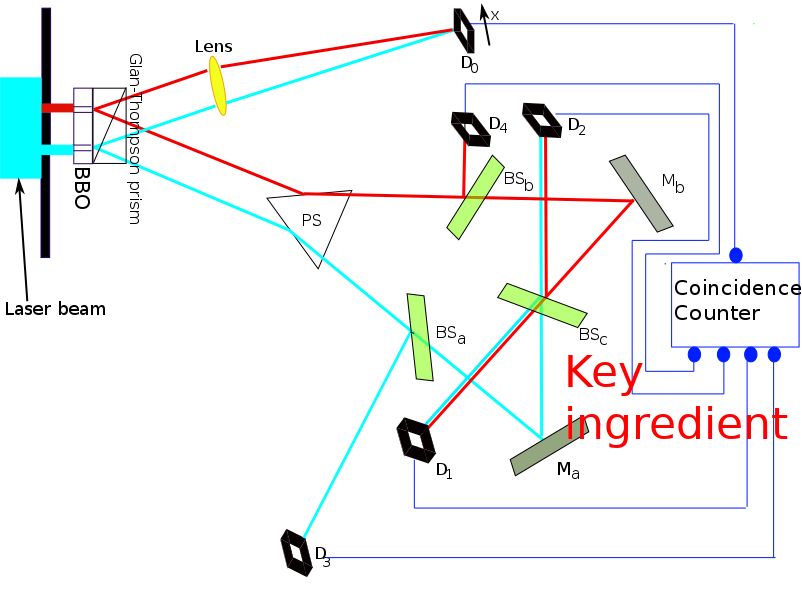
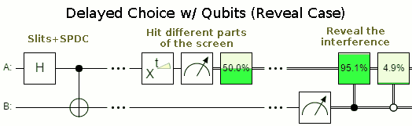
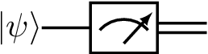
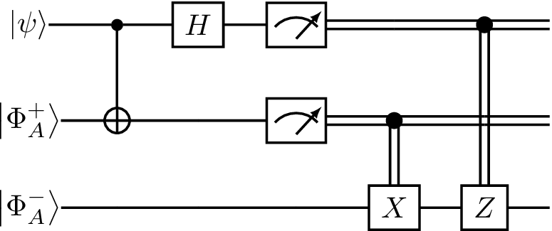

The four postulates of Quantum Mechanics¶
In this course, our aim is to study computing devices which operate according to the laws of quantum mechanics. Developed during the early 20th century by physicists Max Planck, Albert Einstein, Erwin Schrödinger and many others, quantum mechanics is a set of mathematical laws which describe the behaviour of subatomic particles such as protons, electrons, and photons. Although the theory has proven remarkably successful since its inception, it is nevertheless notoriously counterintuitive, an aspect which we shall explore in this lecture. Quantum mechanics is based on four postulates, which describe the following four intuitive ideas: How to describe a single quantum system, how to perform quantum operations on a quantum system, how to describe multiple quantum systems, and how to measure or extract classical information from a quantum system.
Postulate 1: Individual Quantum systems¶
Recall that in the classical world, a bit \(x\) can take on one of two values: 0 or 1. In the quantum world, we immediately see a radical departure from this statement, a quantum bit, or qubit, can take on not just 0 or 1, but rather both values 0 and 1 simultaneously. This is a very deep and counterintuitive statement, so it worth reflecting on: it is like saying you can be both asleep and awake at the same time, or here on Earth and simultaneously on Mars at the same time. Indeed, relative to life as we know it, it makes no sense!
Let us formalize this phenomenon. We begin by encoding bits 0 and 1 via the standard basis vectors \(\left|0\right\rangle, \left|1\right\rangle \in \mathbb C^2\) . Then, to denote that a qubit is in states \(\left|0\right\rangle\) and \(\left|1\right\rangle\) simultaneously, we write
This is called a superposition. More generally, we can change the “extent” to which the qubit is in state \(\left|0\right\rangle\) versus \(\left|0\right\rangle\) via amplitudes \(\alpha,\beta \in \mathbb C\) , i.e.
The only restriction is that \(\left|\psi\right\rangle\) must be a unit vector, i.e. that \(\left|\alpha\right|^2+ \left|\beta\right|^2 = 1\). To summarize, any unit vector in \(\mathbb C^2\) describes the state of a single qubit.
Qubit is a 2-dimensional (which describes a two state system). There is no physical limitation to use qubits: One can use d-state systems, resulting in d-dimensional states (called a qudit). Qudit is described by a unit vector \(\left|\psi\right\rangle \in \mathbb C^d\) , which can be described as
where \(\left|i\right\rangle\in \mathbb C ^d\) denotes the _i_th computational basis vector and \(\alpha_i \in \mathbb C\). Since \(\left|\psi\right\rangle\) is a unit vector, we have \(\sum_{i=0}^{d-1}\left|\alpha_i\right|^2=1\)
Postulate 2: Quantum operations¶
We next ask: What types of operations or maps can we perform on a qubit? Since a qubit is a vector, the natural choice is a linear map, i.e. multiplication by a matrix. However, not all matrices are fair game — it turns out that nature only allows a special class of matrices known as unitary matrices. A unitary matrix \(U \in \mathcal L( \mathbb C^ d )\) is one which satisfies \(UU^\dagger = U^\dagger U = I\). In other words, the inverse of \(U\) is simple to calculate — just take the dagger of \(U\) . This immediately yields a key insight — all quantum gates (qubit operations) are reversible. Among the most common single qubit gates are the following, known as the Pauli gates, after Austrian-Swiss physicist Wolfgang Pauli:
\(X\) Gate¶
The \(X\) gate acts as a “quantum” NOT gate, as we see below:
\(\left|+\right\rangle\) and \(\left|-\right\rangle\) are eigenvectors of \(X\) i.e. \(X\left|+\right\rangle=\left|+\right\rangle\) and \(X\left|-\right\rangle=-\left|-\right\rangle\). The spectral decomposition of \(X\) is hence
\(Z\) Gate¶
The \(Z\) gate, on the other hand, has no classical analogue. It acts as
In other words, Z leaves \(\left|0\right\rangle\) invariant, but injects a “phase” of −1 in front of \(\left|1\right\rangle\). This also immediately shows that \(\left|0\right\rangle\) and \(\left|1\right\rangle\) are eigenvectors of Z with eigenvalues 1 and −1, respectively.
The Z gate is special in that it allows us to inject a relative phase into a quantum state. For example,
By relative phase, we mean that only the amplitude on \(\left|1\right\rangle\) had its sign changed (or more generally, was multiplied by a phase \(e^{i\pi} = −1\)). If all the amplitudes in the state were instead multiplied by \(e^{i\pi}\) , then we could simply factor out the eiπ from the entire state — in this case,we would call \(e^{i\pi}\) a global phase. It turns out that a global phase is insignificant in that it cannot be experimentally detected. A relative phase may seemingly also look unimportant - yet, as we shall see in this course, it is one of the features of quantum mechanics which allows quantum computers to outperform classical ones!
Hadamard Gate¶
Finally, we come to a fourth important unitary gate, the Hadamard gate:
The Hadamard gate is special in that it creates superpositions for us. Namely, we have \(H\left|0\right\rangle =\left|+\right\rangle\) and \(H\left|1\right\rangle =\left|-\right\rangle\). It can also “erase” superpositions, i.e. \(H\left|+\right\rangle =\left|0\right\rangle\) and \(H\left|-\right\rangle =\left|1\right\rangle\) . In other words, \(H\) is self-inverse — we have that \(H^2 = I\) for \(I\) the identity matrix. In fact, the Pauli matrices are also self-inverse.
Quantum Circuits¶
A quantum circuit is a graphical model for depicting quantum computation. The quantum computation is represented by a sequence of quantum gates, measurements, initializations of qubits to known values, and etc. For example, here are three circuits:

They correspond to evolutions \(X\left|\psi\right\rangle \), \(H\left|\psi\right\rangle\), and \(HX\left|\psi\right\rangle \), respectively. Each wire in such a diagram denotes a quantum system, and a box labelled by gate \(U\) depicts the action of unitary \(U\) . We think of time going from left to right; for the last circuit above, note that the \(X\) appears on the “left” in the circuit diagram but on the “right” in the expression \(HX\left|\psi\right\rangle \); this is because \(X\) should be applied first to \(\left|\psi\right\rangle \), then \(H\).
Postulate 3: Composite Quantum Systems¶
Thus far, we have considered only single quantum systems, i.e. states \(\left|\psi\right\rangle\in \mathbb{C}^d\) for \(d\geq 2\). We need multiple qubits interacting simultaneously for quantum computation. How can we mathematically describe, for example, the joint state of two qubits? The correct Linear Algebraic tool for this task is the tensor product, denoted \(\otimes\). The tensor product allows us to “stitch together” two vectors. For example when two states \(\left|\psi\right\rangle,\left|\phi\right\rangle\in \mathbb{C}^2\) interact, it results in a larger 4-dimensional vector given by \(\left|\psi\right\rangle\otimes\left|\phi\right\rangle\in \mathbb{C}^4\) . Formally, we have \(\mathbb{C}^2\otimes\mathbb{C}^2=\mathbb{C}^{2\times2}\) . In other words, the entries of a vector \(\left|\psi\right\rangle\otimes\left|\phi\right\rangle\in \mathbb{C}^2\otimes\mathbb{C}^2\) can be referenced via a pair of indices \((i, j)\) for \(i, j \in {0, 1}\), and the specific rule for doing so is
where recall \(\psi_i\) and \(\phi_j\) are the entries of \(\left|\psi\right\rangle\) and \(\left|\phi\right\rangle\), respectively. Here, you should think of the pair \((i, j)\) as representing the bits of a single index \(x \in {0, 1, 2, 3}\). So for example, \((0, 0)\) is equivalent to index 0, (0, 1) to index 1, and (1, 1) to index 3. This implies that we can think of \(\left|\psi\right\rangle\otimes\left|\phi\right\rangle\) as having four entries, i.e. \(\left|\psi\right\rangle\otimes\left|\phi\right\rangle\in \mathbb{C}^4\) . Let us demonstrate with some examples:
Quantum Entanglement¶
Now that we know how to stitch together a pair of single qubit states, it turns out we have opened Pandora’s box. For we can now talk about the two-qubit state which troubled Einstein to the end of his days — the innocuous-looking Bell state:
This state demonstrates a quantum phenomenon known as entanglement — intuitively, if a pair \(q_0\) and \(q_1\) of qubits are entangled, then they are so “tightly bound” that one cannot accurately describe the state of \(q_0\) or \(q_1\) alone — only the joint state of \(q_0\) and \(q_1\) can be described precisely. In the language of tensor products, this is captured by the following statement: There do not exist \(\left|\psi_1\right\rangle,\left|\psi_2\right\rangle\in \mathbb{C}^d\) such that \(\left|\Phi^+\right\rangle=\left|\psi_1\right\rangle\otimes\left|\psi_2\right\rangle\). In 1935, Einstein, Podolsky and Rosen published a famous paper nowadays referred to as the “EPR” paper, in which they argue that quantum mechanics cannot be a complete physical theory because it allows the existence of states such as \(\left|\Phi^+\right\rangle\). Fast forwarding a number of decades, we now not only believe entanglement is real, but we know that is is necessary resource for quantum computers to outperform classical ones.
We shall later return to the topic of entanglement, but for now let us remark that there are three other such Bell states:
Note that here we have further simplified notation by letting (e.g.) \(\left|0\right\rangle\left|0\right\rangle=\left|00\right\rangle\). The four Bell states \(\left\{\left|\Phi^+\right\rangle, \left|\Phi^-\right\rangle, \left|\Psi^+\right\rangle, \left|\Psi^-\right\rangle\right\}\) form an orthonormal basis for \(\mathbb{C}^{4}\) known as the Bell basis, after Northern Irish physicist John Bell.
Two-qubit quantum gates.¶
We have seen that two-qubit quantum states are described by unit vectors in \(\mathbb{C}^{4}\) . We can thus discuss two-qubit quantum gates, i.e. unitary operators \(U \in\mathcal L (\mathbb{C}^{4})\). There are two types of such gates: The first are simply tensor products of one-qubit gates, such as \(X \otimes Z\) or \(H \otimes H\). Here, the tensor product is defined analogously for matrices as it is for vectors. (The formal description is cumbersome, but we follow with a helpful illustration to clarify.) For any \(A \in\mathcal L (\mathbb{C}^{d_1})\),\(B \in\mathcal L (\mathbb{C}^{d_2})\) , \(A \otimes B\) is a \(d_1d_2 \times d_1d_2\) complex matrix whose entries are indexed by \(([d_1] \times [d_2], [d_1] \times [d_2])\) (where \([d] = \{0, . . . , d − 1\}\) here), such that
To clarify this definition, suppose
Then \(A\otimes B\) is
In other words, \(A\otimes B\) is obtained by taking four copies of \(B\), each time multiplying by a different scalar entry of \(A\).
The tensor product for matrices shares the properties of the tensor product for vectors, with the addition of two rules below:
In terms of circuit diagrams for tensor products of unitaries are like below: (We consider the cases of \(X \otimes I\), \(I \otimes Z\), and \(H \otimes H\), respectively.)

Finally, we can also consider genuinely two-qubit gates, i.e. gates which are not the tensor product of single qubit gates. One important such gate is the controlled-NOT gate, denoted CNOT. The CNOT treats one qubit as the control qubit, and the other as the target qubit. It then applies the Pauli \(X\) gate to the target qubit only if the control qubit is set to \(\left|1\right\rangle\). More precisely, the action of the CNOT on a two-qubit basis is given as follows, where qubit 1 is the control and qubit 2 is the target
The CNOT gate is given by matrix:
where the second expression is in block matrix form with \(I\) and \(X\) the identity and \(X\) matrices.
The circuit diagram for the CNOT is given by

With this in hand, we can do our first interesting computation — we can prepare the Bell state \(\Phi^+\) starting from an initial state of \(\left|00\right\rangle\) The preparation circuit is given as:

Delayed choice quantum eraser¶
A delayed-choice quantum eraser experiment, first performed by Yoon-Ho Kim, R. Yu, S. P. Kulik, Y. H. Shih and Marlan O. Scully, and reported in early 1999, is an elaboration on the quantum eraser experiment that incorporates concepts considered in Wheeler’s delayed-choice experiment from late 70s to early 80s . The experiment was designed to investigate peculiar consequences of the well-known double-slit experiment in quantum mechanics, as well as the consequences of quantum entanglement.

An argon laser generates individual 351.1 nm photons that pass through a double-slit apparatus (vertical black line in the upper left corner of the diagram).
An individual photon goes through one (or both) of the two slits. In the illustration, the photon paths are color-coded as red or green lines to indicate which slit the photon came through (red indicates slit A, green indicates slit B).
So far, the experiment is like a conventional two-slit experiment. However, after the slits, spontaneous parametric down-conversion (SPDC) is used to prepare an entangled two-photon state. This is done by a nonlinear optical crystal BBO (beta barium borate) that converts the photon (from either slit) into two identical, orthogonally polarized entangled photons with \(\frac{1}{2}\) the frequency of the original photon. The paths followed by these orthogonally polarized photons are caused to diverge by the Glan–Thompson prism.
One of these 702.2 nm photons, referred to as the “signal” photon (look at the red and green lines going upwards from the Glan–Thompson prism) continues to the target detector called \(D_0\). During an experiment, detector \(D_0\) is scanned along its x axis, its motions controlled by a step motor. A plot of “signal” photon counts detected by \(D_0\) versus x can be examined to discover whether the cumulative signal forms an interference pattern.
The other entangled photon, referred to as the “idler” photon (look at the red and green lines going downwards from the Glan–Thompson prism), is deflected by prism PS that sends it along divergent paths depending on whether it came from slit A or slit B.
Somewhat beyond the path split, the idler photons encounter beam splitters \(S_a\), \(S_b\), and \(S_c\) that each have a 50% chance of allowing the idler photon to pass through and a 50% chance of causing it to be reflected. \(M_a\) and \(M_b\) are mirrors.
The beam splitters and mirrors direct the idler photons towards detectors labeled \(D_1\), \(D_2\), \(D_3\) and \(D_4\). Note that:
If an idler photon is recorded at detector \(D_3\), it can only have come from slit B.
If an idler photon is recorded at detector \(D_4\), it can only have come from slit A.
If an idler photon is detected at detector \(D_1\) or \(D_2\), it might have come from slit A or slit B.
The optical path length measured from slit to \(D_1\), \(D_2\), \(D_3\) and \(D_4\) is 2.5 m longer than the optical path length from slit to \(D_0\). This means that any information that one can learn from an idler photon must be approximately 8 ns later than what one can learn from its entangled signal photon.
Let’s call the green path \(\left|0\right\rangle\) and red path \(\left|1\right\rangle\). The double slit can be described by a Hadamard gate. The SPDC corresponds to a CNOT-gate. The state after the SPDC \(\frac{1}{2} \left(\left|00\right\rangle+\left|11\right\rangle\right)\). There is a phase \(\phi\) depending on the position \(x\) of the detector \(D_0\), which corresponds to a phase gate \(R_\phi\). The state before the measurement is
Detection of the idler photon by \(D_3\) or \(D_4\) provides delayed “which-path information” indicating whether the signal photon with which it is entangled had gone through slit A or B. On the other hand, detection of the idler photon by \(D_1\) or \(D_2\) provides a delayed indication that such information is not available for its entangled signal photon. Insofar as which-path information had earlier potentially been available from the idler photon, it is said that the information has been subjected to a “delayed erasure”.
When the experimenters looked at the signal photons whose entangled idlers were detected at \(D_1\) or \(D_2\), they detected interference patterns.
However, when they looked at the signal photons whose entangled idlers were detected at \(D_3\) or \(D_4\), they detected simple diffraction patterns with no interference.
Let’s look at the probability to measure the a photon in \(D_0\).
If we measure the second photon in \(D_3\) or \(D_4\), the post measurement state collapses to \(\left|\pm\right\rangle\) basis. Then the probability for a click in \(D_0\) is \(\frac{1}{2}\) . This is independent of the phase: no interference.
If we measure the second photon in \(D_1\) or \(D_2\), the probability for a click at \(D_0\) is \(\frac{1}{2}\left(1\mp \cos\phi\right)\), so here we see the interference. Whether we see interference or not depends on the basis choice on the second system, which can be delayed.

 Simulated joint detection rates between \(D_0\) and \(D_1\), \(D_2\), \(D_3\), \(D_4\) (\(R_{01}\), \(R_{02}\), \(R_{03}\), \(R_{04}\)).

As you can see I have omitted the “coincidence counter” from the above description, similar to many people who talked about this experiment. Actually this is a key element. The coincidence counter would appear as a purely electronic device that acts on measurements. So if you would cast it as a quantum circuit it would look like this:


The data was always the same! The “erasure” only changes how we analyse the data, i.e. what we keep and what we discard. This is done after the measurement, using an electronic circuit. There’s no time travel, no disproof of materialism, just plain ‘ol correlation being mistaken for causation.
A full circuit can be found here for reference purposes
In fact you can even make classical analogues: Bob has a six-sided die, a two-sided coin, and a small empty box to put the coin in. He rolls the die, gets a result between 1 and 6, and places the coin in the box in a way that depends on the die roll. If the die roll was even, the coin is placed heads up. If the die roll was odd, the coin is placed tails up. Bob then writes down his die roll, and carefully hands the box to Alice.
Alice now has to decide to either a) just open the box or b) shake the box before opening it. (Shaking the box randomizes the coin.) Once the box is open, she writes down whether the coin was face up or face down, and also writes down whether or not she shook the box.

The tweaked delayed choice quantum eraser so that there isn’t a classical analogue is called a Bell test, however it lacks the “characteristics” of the delayed choice quantum eraser. For example, in order to avoid the signalling loophole, the choice can no longer be delayed.
Postulate 4: Measurement¶
How do we mathematically model the act of measuring or observing a quantum system considering that the very act of looking at or observing a quantum system irreversibly alters the state of the system? To model this phenomenon, we shall use the notion of a projective or von Neumann measurement (named after Hungarian child prodigy and mathematician, John von Neumann, who was apparently already familiar with calculus at the age of 8). To do so, we must define three classes of linear operators, each of which is increasingly more restricted. All three classes will prove vital throughout this course.
Hermitian operators: An operator \(M \in \mathcal L \left(\mathbb C^d \right)\) is Hermitian if \(M = M^\dagger\) . Examples you are already familiar with are the Pauli \(X\), \(Y\) , and \(Z\) gates, which are not only unitary, but also Hermitian. A Hermitian operator has the important property that all of its eigenvalues are real. Thus, Hermitian operators can be thought of as a higher dimensional generalization of the real numbers.
Positive semi-definite operators: If a Hermitian operator has only non-negative eigenvalues, then it is called positive-semidefinite. Thus, positive semi-definite (or positive for short) matrices generalize the non-negative real numbers.
Orthogonal projection operators: A Hermitian matrix \(\Pi \in \mathcal L \left(\mathbb C^d \right)\) is an orthogonal projection operator (or projector for short) if \(\Pi^2=\Pi\). This is equivalent to saying \(\Pi\) has only eigenvalues 0 and 1. Let us prove this equivalence briefly: Since \(\Pi\) is Hermitian, we can take its spectral decomposition, \(\Pi = \sum_i \lambda_i \left|\lambda_i\right\rangle\left\langle\lambda_i\right|\). Hence, $\( \sum_i \lambda_i \left|\lambda_i\right\rangle\left\langle\lambda_i\right|=\Pi =\Pi^2=\left(\sum_i \lambda_i \left|\lambda_i\right\rangle\left\langle\lambda_i\right|\right)\left(\sum_i \lambda_i \left|\lambda_i\right\rangle\left\langle\lambda_i\right|\right)=\sum_i \lambda_i^2 \left|\lambda_i\right\rangle\left\langle\lambda_i\right| \)$ where the last equality follows since {|λi i} is an orthonormal basis. Since the |λi i are orthogonal, we thus have that for all i, λi = λ2i . But this can only hold if λi ∈ {0, 1}, as claimed.
It is important to note that since a projector \(\Pi\)’s eigenvalues are all 0 or 1, its spectral decomposition must take the form \(\Pi=\sum_i \left|\psi_i\right\rangle\left\langle\psi_i\right|\), where \(\left\{\left|\psi_i\right\rangle\right\}\) are an orthonormal set. Conversely, summing any set of orthonormal \(\left\{\left|\psi_i\right\rangle\right\}\) in this fashion yields projector. Observe that a projector \(\Pi\) has rank 1 if and only if \(\Pi=\left|\psi\right\rangle\left\langle\psi\right|\) for some \(\left|\psi_i\right\rangle \in \mathbb C ^ d \) , since the rank of \(\Pi\) equals the number of non-zero eigenvalues of \(\Pi\), and here \(\Pi=\left|\psi\right\rangle\left\langle\psi\right|\) is a spectral decomposition of \(\Pi\). Finally,let us develop an intuition for what a projector actually does — for any projector \(\Pi=\sum_i \left|\psi_i\right\rangle\left\langle\psi_i\right|\) and state \(\left|\phi\right\rangle\) to be measured, we have $\( \Pi\left|\phi\right\rangle=\left(\sum_i \left|\psi_i\right\rangle\left\langle\psi_i\right|\right)\left|\phi\right\rangle=\sum_i \left|\psi_i\right\rangle\left(\left\langle\psi_i\middle|\phi\right\rangle\right)=\sum_i \left(\left\langle\psi_i\middle|\phi\right\rangle\right)\left|\psi_i\right\rangle\in\text{Span}\left\{\left|\psi_i\right\rangle\right\} \)$
where note \(\left\langle\psi_i\middle|\phi\right\rangle\in \mathbb C\). Thus, \(\Pi\) projects us down onto the span of the vectors \(\left\{\left|\psi_i\right\rangle\right\}\).
Projective Measurements.¶
With projectors in hand, we can now define a projective measurement. A projective measurement is a set of projectors \(B = \left\{\Pi_i\right\}_{i=0}^m\) such that \(\sum_{i=0}^m \Pi_i = I\). The latter condition is called the completeness relation. If each \(\Pi_i\) is rank one, i.e. \(\Pi_i=\left|\psi_i\right\rangle\left\langle\psi_i\right|\), then we say that \(B\) models a measurement in basis \(\left\{\left|\psi_i\right\rangle\right\}\). Often, we shall measure in the computational basis, which is specified by \(B= \left\{\left|0\right\rangle\left\langle0\right|,\left|1\right\rangle\left\langle1\right|\right\}\) in the case of \(\mathbb C ^ 2\) (and generalizes as \(B= \left\{\left|i\right\rangle\left\langle,\right|\right\}_{i=0}^{d-1}\) for \(\mathbb C^d\))
With a projective measurement \(B = \left\{\Pi_i\right\}_{i=0}^m\subseteq\mathbb C^d\) in hand, let us specify how one uses \(B\). Suppose our quantum system is in state \(\left|\psi\right\rangle\in\mathbb C^d\) . Then, the probability of obtaining outcome \(i \in \{0, . . . , m\}\) when measuring \(\left|\psi\right\rangle\) with \(B\) is given by $\( \text{Pr}(\text{outcome } i) = \text{Tr}\left(\Pi_i \left|\psi\right\rangle \left\langle\psi\right|\Pi_i \right) = \text{Tr}\left(\Pi_i^2 \left|\psi\right\rangle \left\langle\psi\right|\right) = \text{Tr}\left(\Pi_i \left|\psi\right\rangle \left\langle\psi\right|\right), \)\( where the second equality follows by the cyclic property of the trace and the third since \)\Pi_i$ is a projector.
The exercise above has an important moral — requiring a quantum state \(\left|\psi\right\rangle\) to be a unit vector (i.e. \(\left|\alpha\right|^2 + \left|\beta\right|^2 = 1\)) ensures that when measuring \(\left|\psi\right\rangle\), the distribution over the outcomes is a valid probability distribution, i.e. the probabilities for all possible outcomes sum to 1. The other important take-home message here is that measurements in quantum mechanics are inherently probabilistic — in general, the outcomes cannot be perfectly predicted! Finally, we started this lecture by saying that the very act of measuring a quantum state disturbs the system. Let us now formalize this; we will crucially use the fact discussed earlier that a projector projects a vector \(\left|\psi\right\rangle\) down into a smaller subspace. Specifically, upon obtaining outcome \(\Pi_i\) when measuring \(B\), the state of system “collapses” to
Note the denominator above is a scalar, and is just the probability of outcome \(i\). There are two points here which may confuse you: Why have we written the output state as a matrix \(\Pi_i \left|\psi\right\rangle \left\langle\psi\right|\Pi_i\) rather than a vector \(\Pi_i \left|\psi\right\rangle\), and what is the role of the denominator? Let us handle each of these in order.
First, conditioned on outcome \(\Pi_i\) , the output state is indeed a vector, namely \(\Pi_i \left|\psi\right\rangle\). However, there is a more general formalism which we shall discuss shortly called the density operator formalism, in which quantum states are written as matrices, not vectors. Specifically, the “density matrix” representing vector \(\left|\psi\right\rangle\) would be written as matrix \(\left|\psi\right\rangle \left\langle\psi\right|\). The density operator formalism is more general than the state vector approach we have taken so far, and will be crucial for studying individual subsystems of a larger composite quantum state. Thus, the answer to question 1 is that we have written the output as a matrix simply to slowly ease the transition into the density matrix formalism.
The motive behind question 2 is somewhat less sinister — the problem here is that since we projected out part of \(\left|\psi\right\rangle\) during the measurement, the output \(\Pi_i \left|\psi\right\rangle\) may not necessarily be normalized. To renormalize \(\Pi_i \left|\psi\right\rangle\), we simply divide by its Euclidean norm to obtain
The state \(\left|\psi^\prime\right\rangle\) describes the post-measurement state of our system, assuming we have obtained outcome \(i\).
A final quirk we should iron out is the following — in terms of measurements, what is the consequence of the fact that a projector \(\Pi_i\) satisfies \(\Pi_i^2 = \Pi_i\) ? Well, if you observe a quantum system now, and then again five minutes from now, and if the system has not been subjected to any gates or noise in between the measurements, then the two measurement results you obtain should agree (I realize the study of quantum mechanics has likely distorted your view of when you can trust your intuition, but this is one case in which you can). To model this, suppose we measure using \(B = \{\Pi_i\}\) and obtain results \(i\) and \(j\) in measurements 1 and 2, respectively. Then:
To simplify this expression, we use the fact that if the completeness relation holds for projectors \(\{\Pi_i\}\), i.e. \(\sum_i \Pi_i = I\), then it turns out that \(\Pi_j \Pi_1 = \delta_{ij} \Pi_i\), where recall \(\delta_ij\) is the Kronecker delta. Thus, if \(i\neq j\), above equation equals to 0, and if \(i = j\), it reduces to $\( \frac{\text{Tr}\Pi_j\Pi_i \left|\psi\right\rangle \left\langle\psi\right|\Pi_i\Pi_j }{\text{Tr}\left(\Pi_i \left|\psi\right\rangle \left\langle\psi\right| \right)}=\frac{\text{Tr}\left(\Pi_i^2 \left|\psi\right\rangle \left\langle\psi\right|\Pi_i^2 \right)}{\text{Tr}\left(\Pi_i \left|\psi\right\rangle \left\langle\psi\right| \right)}=\frac{\text{Tr}\left(\Pi_i \left|\psi\right\rangle \left\langle\psi\right|\Pi_i\right) }{\text{Tr}\left(\Pi_i \left|\psi\right\rangle \left\langle\psi\right| \right)}=\frac{\text{Tr}\left(\Pi_i \left|\psi\right\rangle \left\langle\psi\right|\right)}{\text{Tr}\left(\Pi_i \left|\psi\right\rangle \left\langle\psi\right| \right)}=1 \)$ i.e. measuring the state a second time again yields outcome i with probability 1, as desired. Thus, although observing a state for the first time disturbs it, subsequent measurements will consistently return the same measurement result!
We close this section by giving the circuit symbol which denotes a measurement of a qubit \(\left|\psi\right\rangle \in \mathbb C^2\) in the computational basis \(B= \left\{\left|0\right\rangle\left\langle0\right|,\left|1\right\rangle\left\langle1\right|\right\}\):

The double-wires on the right side indicate that the output of the measurement is a classical string (indicating which measurement outcome was obtained).
Quantum Teleportation¶
With the concepts of the Bell state and measurement in hand, we can discuss our first neat computational trick: Quantum teleportation. Suppose you have a single-qubit quantum state \(\left|\psi\right\rangle= \alpha\left|0\right\rangle + \beta\left|1\right\rangle \) in your possession (i.e. as a physical system, not on paper), but that you do not know the values of \(\alpha\) and \(\beta\). Your friend Alice now phones you and asks to borrow your state. How can you send it to her? One obvious way is simply to pop your system in the mail and physically send it over. However, it turns out that by exploiting the phenomenon of entanglement, you can do something incredible — by sending two classical bits over the telephone to Alice, you can “teleport” \(\left|\psi\right\rangle\) instantly to her!
To teleport \(\left|\psi\right\rangle\), we assume that you and Alice each share half of a Bell state \(\left|\Phi^+\right\rangle=\frac{1}{\sqrt 2}\left(\left|00\right\rangle+\left|11\right\rangle\right)\) to begin with; specifically, you hold qubit 1 of \(\left|\Phi^+\right\rangle\), and Alice holds qubit 2. The teleportation circuit is then given as follows:

Let us break this down piece by piece. The first two wires are held by you; wire 1 holds the state to be teleported, \(\left|\psi\right\rangle\), and wire 2 holds your half of \(\left|\Phi^+\right\rangle\). The third wire holds Alice’s half of \(\left|\Phi^+\right\rangle\). Note that we have used \(\left|\Phi^+_A\right\rangle\) and \(\left|\Phi^+_B\right\rangle\) to denote the two “halves” of \(\left|\Phi^+\right\rangle\), but this is poor notation — read literally, this diagram suggests \(\left|\Phi^+\right\rangle=\left|\Phi^+_A\right\rangle\otimes\left|\Phi^+_B\right\rangle\), which is not true since is \(\left|\Phi^+\right\rangle\) entangled, and hence from last lecture we know that there do not exist states \(\left|\Phi^+_A\right\rangle\) and \(\left|\Phi^+_B\right\rangle\) such that \(\left|\Phi^+\right\rangle=\left|\Phi^+_A\right\rangle\otimes\left|\Phi^+_B\right\rangle\) This notation is for illustration purposes only, not to complicate the diagram, and make our analysis easy.
The circuit can be divided into 5 steps: Step 1 performs the CNOT, Step 2 the Hadamard gate, Step 3 measures qubits 1 and 2, Step 4 applies a conditional X gate, and Step 5 applies a conditional Z gate. The latter two require clarification: The conditional X gate here takes a classical bit \(b\) as input (hence the incoming wire at the top is a double line), and applies X if and only if \(b = 1\). The conditional Z gate is defined analogously.
Now that we have technically parsed this diagram, let us intuitively parse it. First, you begin in Steps 1 and 2 by performing a CNOT and Hadamard on your qubits, followed by a standard basis measurement in Step 3. Since a measurement in the standard basis maps each qubit to either \(\left|0\right\rangle\) or \(\left|1\right\rangle\), the output of your two measurements can jointly be thought of as one of the four bit strings \(00\), \(01\), \(10\), or \(11\). Call these bits \(b_0 b_1\) . Now you pick up the telephone, call Alice, and tell her the value of \(b_0 b_1\) . Conditioned on \(b_0 \) , she applies X to her half of the Bell pair, followed by Z conditioned on \(b_1\). The claim is that at this point, Alice’s qubit’s state has been magically converted to \(\left|\psi\right\rangle\). In fact, as we shall see shortly, \(\left|\psi\right\rangle\) has also disappeared from your possession! In this sense, teleportation has taken place.
Let us formally analyze the action of this circuit. Denote by \(\left|\psi_1\right\rangle\) for \(i \in \{0, . . . , 5\}\) the joint state of your and Alice’s systems immediately after Step \(i\) has taken place. Here, we define \(\left|\psi_0\right\rangle\) as the initial joint state before any gates are applied; it is given by
After Step 1, i.e. after the CNOT, we have state
After Step 2, i.e. after the Hadamard gate, we have
Let us now pause and analyze the state of affairs. There are four terms in this superposition, each of which begins with a distinct bit string \(\left|00\right\rangle\), \(\left|01\right\rangle\), \(\left|10\right\rangle\), or \(\left|11\right\rangle\). This means that if you now measure qubits 1 and 2 in the standard basis and obtain outcome (say) \(\left|00\right\rangle\), then Alice’s qubit on wire 3 collapses to the only consistent possibility, \(\alpha\left|0\right\rangle + \beta\left|1\right\rangle\). In this case, teleportation has already taken place.
More generally, the four possible outcomes upon measuring qubits 1 and 2 result in four distinct residual states on Alice’s qubit as follows: $\( 00\rightarrow\alpha\left|0\right\rangle + \beta\left|1\right\rangle\qquad 01\rightarrow\alpha\left|1\right\rangle + \beta\left|0\right\rangle\qquad 10\rightarrow\alpha\left|0\right\rangle - \beta\left|1\right\rangle\qquad 11\rightarrow\alpha\left|1\right\rangle - \beta\left|0\right\rangle \)$
Thus, if you simply send the two bits \(b_0 b_1\) encoding the measurement outcome to Alice, then regardless of the value of \(b_0 b_1\) , she can recover your original state \(\left|\psi\right\rangle=\alpha\left|0\right\rangle + \beta\left|1\right\rangle \) via the following identities:
In other words, by conditionally applying X and Z based on the outputs \(b_0 b_1\) from your measurement, Alice can successfully recover your state \(\left|\psi\right\rangle=\alpha\left|0\right\rangle + \beta\left|1\right\rangle \) . This is precisely what is depicted in Steps 4 and 5 of the teleportation circuit. Finally, note that since measuring your qubits leaves you in one of the four standard basis states \(\left|00\right\rangle\), \(\left|01\right\rangle\), \(\left|10\right\rangle\), or \(\left|11\right\rangle\) the state \(\left|\psi\right\rangle\) has now “disappeared” from your possession!